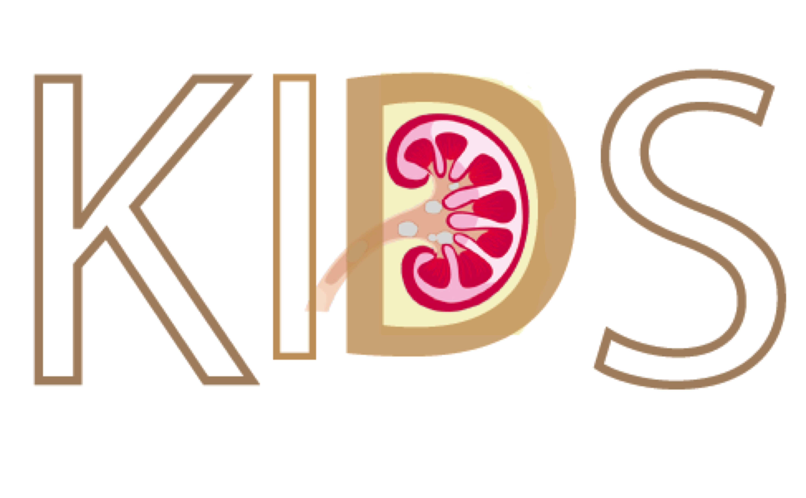

Genetic prioritisation, therapeutic repositioning and cross-disease comparisons reveal inflammatory targets tractable for kidney stone disease
Section 1 Overview

1.1 Contribution
Inflammatory response plays a key role in kidney stone formation, and targeting innate immunity is an increasingly appreciated immunotherapeutic strategy in treating and preventing kidney stone disease. This study shows that identification of crosstalk between inflammatory pathways underlying disease risk can inform therapeutic targets for rational drug selection. To highlight this utility, we identify ulixertinib and losmapimod, two inhibitors of inflammatory mediators that are now under clinical investigation. An atlas of genetic targets, together with candidate drugs we reposition here, can be of translational use to manage kidney stones for years to come.
1.2 Abstract
Background: Formation of kidney stones resulting in urological disorders remains a major cause of morbidity in renal diseases and many others. Innate immunity, mainly inflammasome, has demonstrated a key role in the development of kidney stone disease (or
nephrolithiasis) but a molecular rationale for therapeutic intervention targeting immunity is far from clear. We reason that identifying inflammatory gene networks underlying risk of nephrolithiasis would inform therapeutic targets for rational drug selection.Results: Using our recently established genetics-led target prioritisation approach (Pi) applied to summary data from genome-wide association studies in nephrolithiasis (for example, the most recent), we generated a ranked list of ~12,500 target genes (see Genetic prioritisation), with the top ranked targets highly enriched for genes involved in the NF-kB regulation, including interaction neighbors of inflammasome genes. We identified a network of highly ranked and interconnecting genes that are of functional relevance to nephrolithiasis, such as those involved in autophagy (MTOR and SQSTM1). The identified network forms a cohesive crosstalk between inflammatory pathways (see Pathway crosstalk) that can be utilised for therapeutic repositioning. Coupled with removal analysis, these crosstalk genes can be also useful for combinatorial drug selection, including identification of ulixertinib (targeting MAPK3) and losmapimod (targeting MAPK14) that are both under clinical investigation as inhibitors of inflammatory mediators. Finally, we performed cross-disease comparisons and druggable pocket predictions, identifying inflammatory targets that are specific to and tractable for nephrolithiasis (see Cross-disease comparisons).
Conclusion: Taken together, genetic targets prioritised and candidate drugs repositioned in this study provide the rich information of how to target innate immune pathways, with the potential of advancing immunotherapeutic strategies for nephrolithiasis. The data supporting our findings are made publicly available at https://23verse.github.io/kids. Please email us for more information.